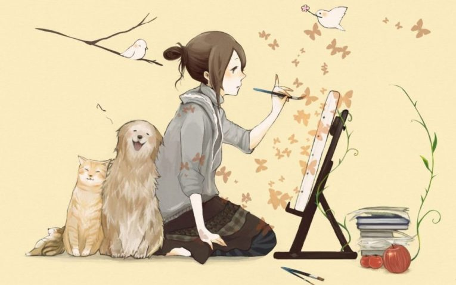
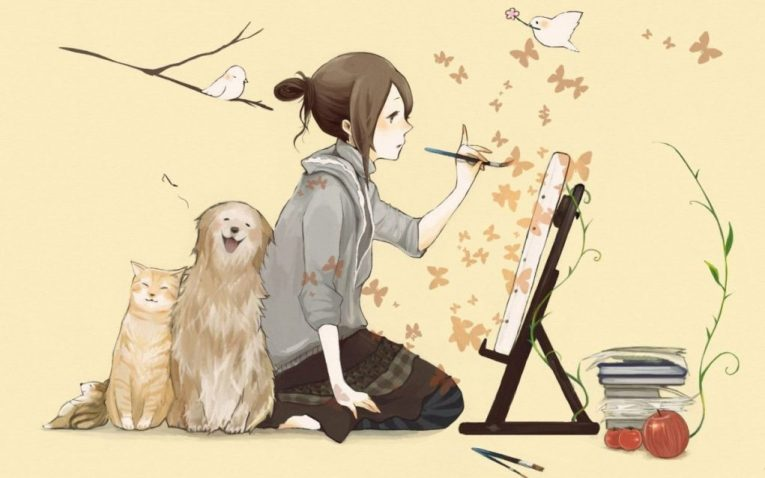

Hi Everybody!
I AM ANUSHKA PANCHODHAYAY.
 

I love drawing. Drawing is my passion. I started to draw since I was little and I still draw. It has a very special place in my heart.
I usually love to do black and white pencil sketches, but I also like drawing with pastel colours and watercolour. I like drawing because like almost any form of art, drawing allows one to express feelings and emotions that words can't describe. It helps me feel more happy and confident. I also do digital drawing. I intend to continue learning new drawing techniques like mandala art, doodling, and oil painting. There is so much to learn out there, and I am excited to try them all! I understand that practice is very important here, and I should try to draw at least one picture per day to improve my work. After all, the beauty of the colours blending into each other cannot be easily expressed in words.
In the end, I want to add that everyone should have one hobby. It helps a lot in daily life. It helps to build your social image.
My Little Exhibition!
For more drawings, visit my facebook page
Anushka's Digital Drawings and more.Famous Artists
Indian Famous Artists
Other Famous Artists
My Inspirations

Famous Paintings
Know about Art and Paintings
Know more about Art and Paintings!